Wait until a figure has arrived
task, dowait and do: let a figure finish its walk before it turns or speaks - or let it do two things at once.
Steps#
- 1
Why. An
affectblock runs beside the script - the script does not wait for it. That is why Kyle and Rosh, each in his own block, already walk at the same time.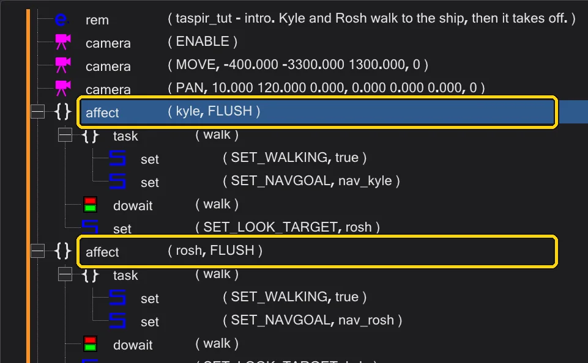
Two affect blocks: they run side by side. - 2
The problem. Inside a block,
set ( SET_NAVGOAL )only *starts* the walk; the next command follows at once - the figure would turn or talk while still walking. The fix: put the walk into atask. Inserttask, name itwalk, and moveSET_WALKINGandSET_NAVGOALinto it.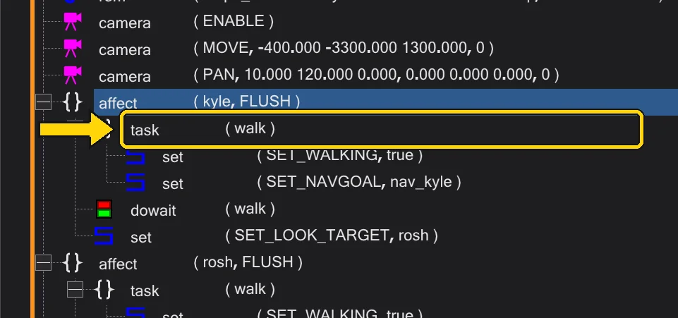
The task walk with the walk inside. - 3
dowait. After the task insert
dowait ( "walk" ). It starts the task and waits until it is done - until the figure has arrived. Everything after it happens when the figure stands.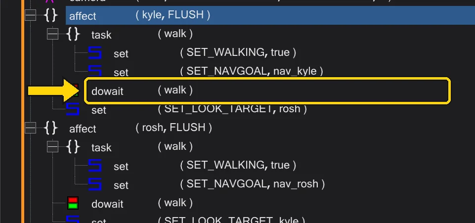
dowait waits for the walk. - 4
Two things at once.
dostarts a task and goes on at once. Two tasks -walkandlook- started with twodo, andwait ( "walk" )later waits for the first one.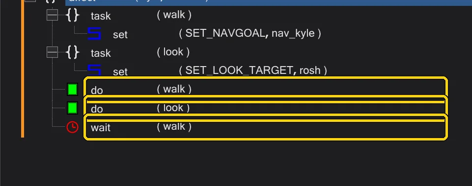
do, do and wait. - 5
Check it in the timeline. Switch to Mission, expand the figure's row in the timeline: what follows the
dowaitstarts where the walk ends.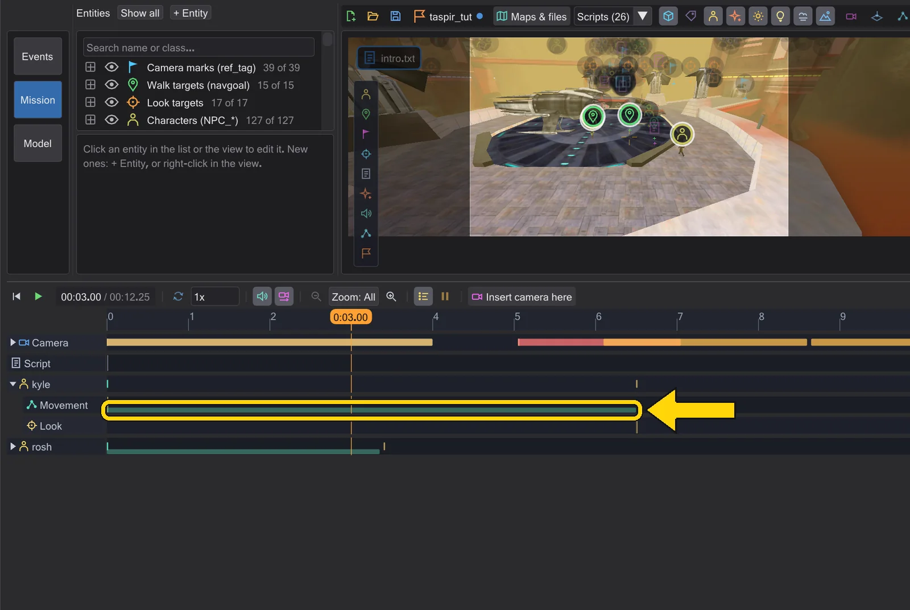
Kyle's walk in the timeline.


- 1
Where the commands are. In Graph, click a script node (the open script is selected at the start). On the right, under Commands of this script, every command of that script is listed - blocks indented. Click a line to select it, double-click to edit it, right-click for the menu.
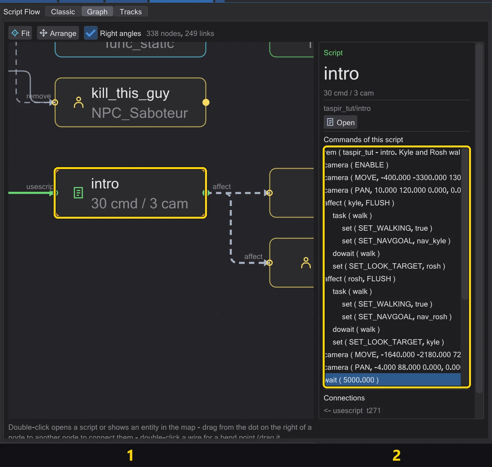
The open script's node (1) and its commands (2). - 2
Build the task. Click the
affectline, double-clicktaskin the Events list and name itwalkin the editor. Then click thetaskline and double-clicksettwice - forSET_WALKINGandSET_NAVGOAL.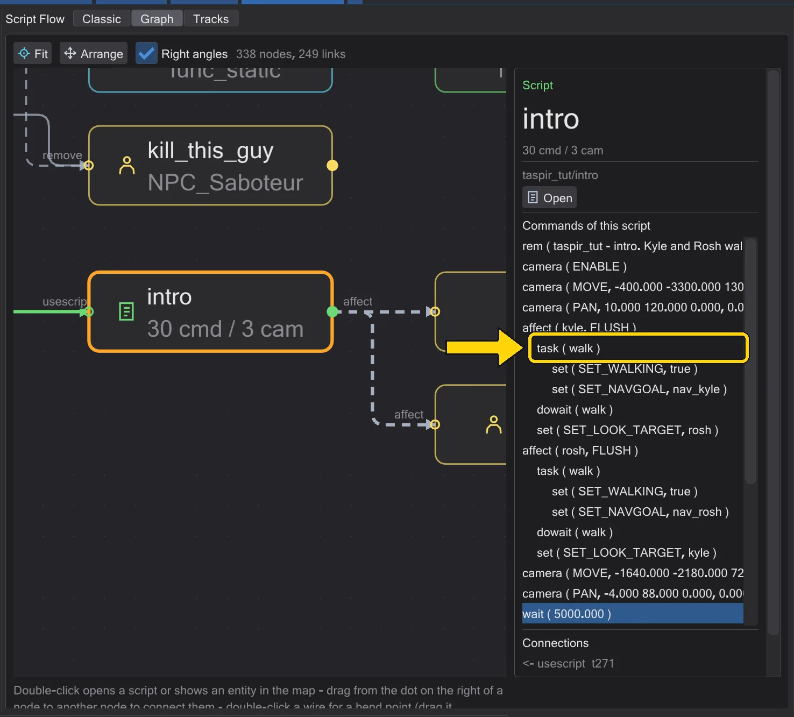
The task walk with the walk inside, in the list. - 3
dowait after it. Drag
dowaitfrom the Events list onto thetaskline: a command dropped on a line goes *after* it - after the whole block. Name the taskwalkin the editor.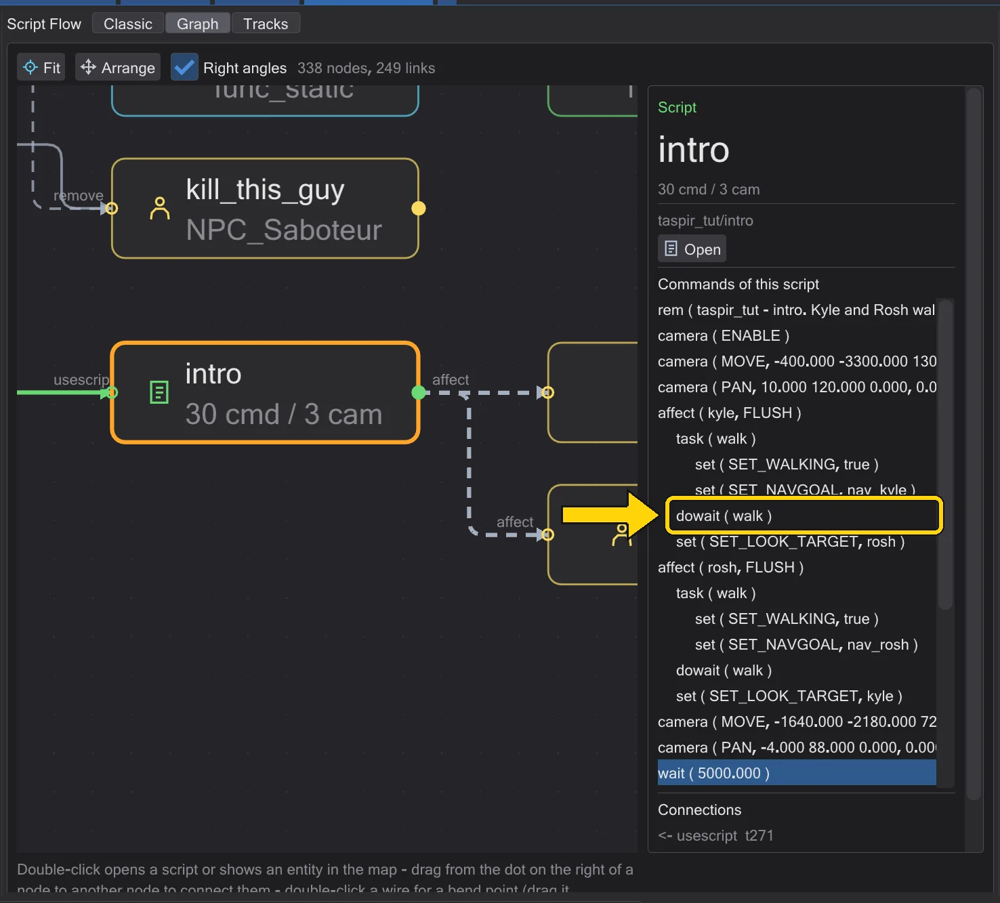
dowait walk after the task.


- 1
Where the commands are. Tracks shows the script over time: the camera, one row per figure, the waits. On the right, Command list lists every command - also those that take no time, such as
affect,taskordeclare.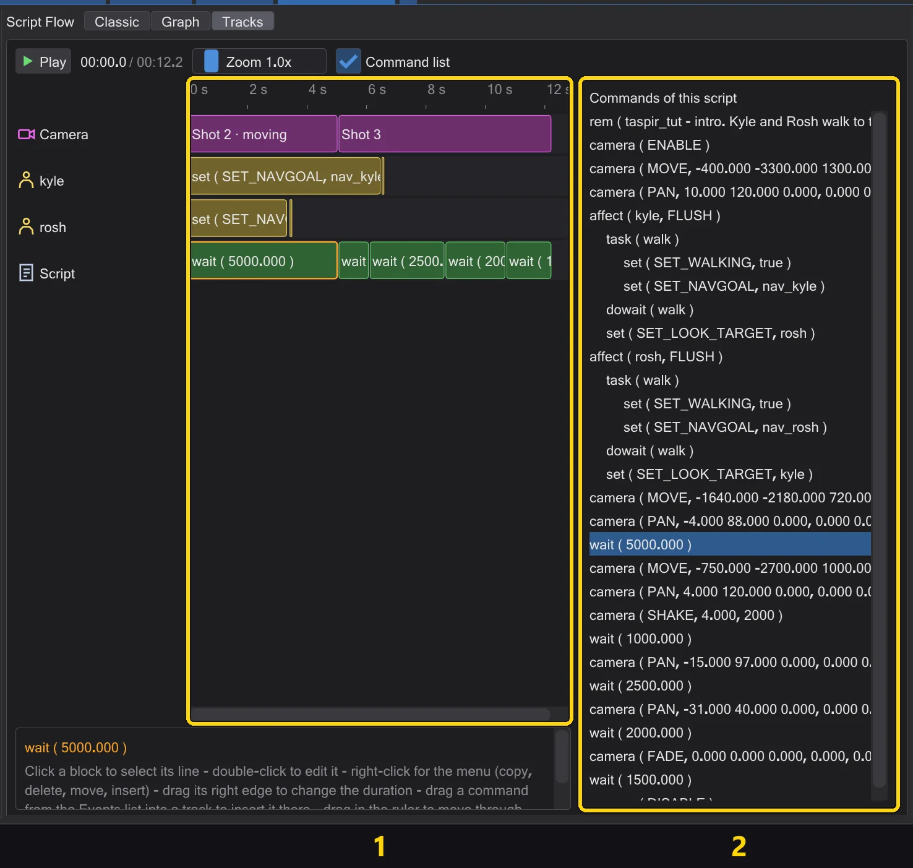
1: the rows of the timeline. 2: the command list. - 2
Build the task in the list. A
taskhas no time of its own - build it in the command list: click theaffectline, double-clicktask, name itwalk; click thetaskline and double-clicksettwice forSET_WALKINGandSET_NAVGOAL.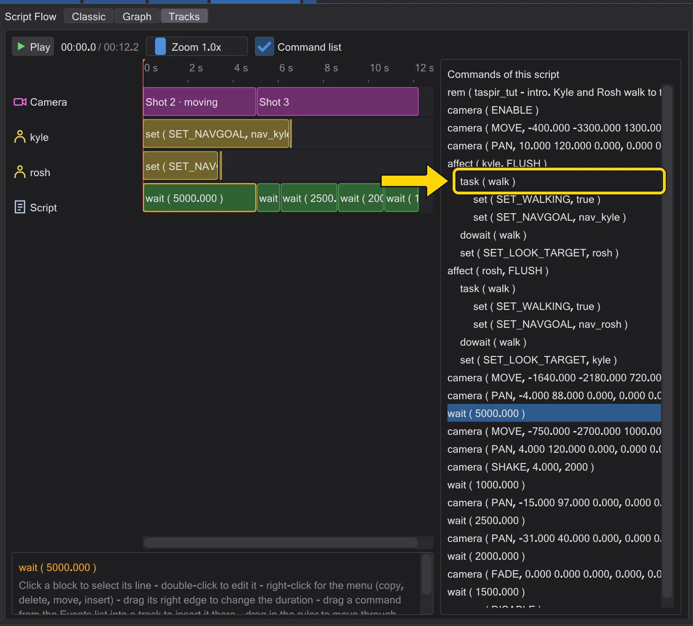
The task walk in the command list. - 4
Two at once. With
doinstead ofdowait, the next command starts at once - its block moves to the start of the walk.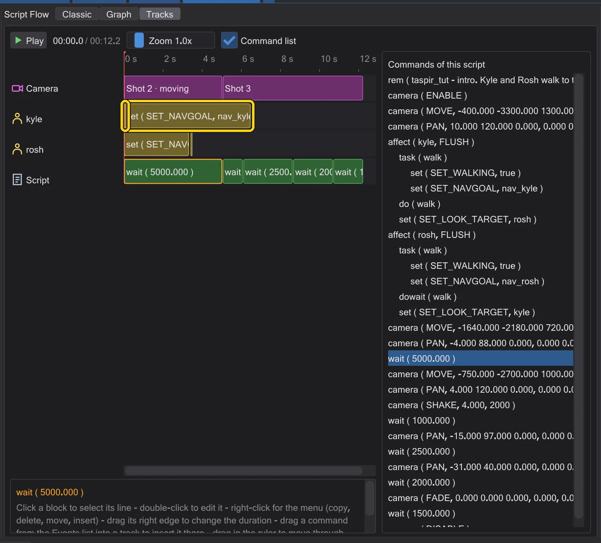
With do: the look starts with the walk.


Good to know#
- Commands marked with
*in their help text (such asSET_NAVGOAL) finish their task only when the action is done - that is what makesdowaitwait.